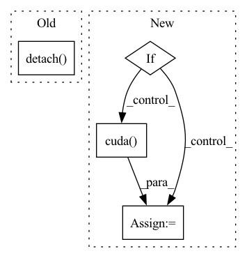

Pattern ID :28404

Before Change
inMask = inMask.float()
ntimes = 2**nlayers
inMask = F.interpolate(inMask, (inMask.size(2)//ntimes, inMask.size(3)//ntimes), mode="nearest")
inMask = inMask.detach().byte()
return inMask
After Change
conv.weight.data.fill_(1/16)
convs.append(conv)
lnet = nn.Sequential(*convs)
if inMask.is_cuda:
lnet = lnet.cuda()
output = lnet(inMask)
output = (output > threshold).float().mul_(1)
return output
In pattern: SUPERPATTERN
Frequency: 3
Non-data size: 4
Instances
Fragment ID: 83755900
Project Name: kumapowerliu/rethinking-inpainting-medfe
Commit Name: 17d04d208950c9c4e2e8bc5251cf06205ec15285
Time: 2020-11-07
Author: 33801357+KumapowerLIU@users.noreply.github.com
File Name: util/util.py
M Class Name: AnonimousClass
N Class Name: AnonimousClass
M Method Name: cal_feat_mask(3)
N Method Name: cal_feat_mask(2)
M Parent Class:
N Parent Class:
M File Name: util/util.py
N File Name: util/util.py
M Start Line: 78
M End Line: 83
N Start Line: 76
N End Line: 93
'>
Before Change
image_tokens += [image_token]
if self.is_verbose:
token = int(image_token.detach().numpy())
print("image token {} is {}".format(i, token))
return torch.cat(image_tokens)
After Change
) -> LongTensor:
image_tokens: List[LongTensor] = []
keys_values_state = torch.zeros(self.keys_values_state_shape)
if torch.cuda.is_available():
keys_values_state = keys_values_state.cuda()
image_token = self.start_token
for i in range(self.sample_token_count):
token_index = self.token_indices[i:i+1]
'>
Fragment ID: 83755898
Project Name: kuprel/min-dalle
Commit Name: 17c96fe110fad3d48ea591dcd46475f521499770
Time: 2022-06-28
Author: brkuprel@gmail.com
File Name: min_dalle/models/dalle_bart_decoder_torch.py
M Class Name: DalleBartDecoderTorch
N Class Name: DalleBartDecoderTorch
M Method Name: forward(3)
N Method Name: forward(3)
M Parent Class: nn.Module
N Parent Class: nn.Module
M File Name: min_dalle/models/dalle_bart_decoder_torch.py
N File Name: min_dalle/models/dalle_bart_decoder_torch.py
M Start Line: 205
M End Line: 222
N Start Line: 206
N End Line: 212
'>
Before Change
detokenizer = VQGanDetokenizer()
detokenizer.load_state_dict(params)
image = detokenizer.forward(image_tokens).to(torch.uint8)
return image.detach().numpy()
After Change
params = load_vqgan_torch_params(model_path)
detokenizer = VQGanDetokenizer()
detokenizer.load_state_dict(params)
if torch.cuda.is_available(): detokenizer = detokenizer.cuda()
image = detokenizer.forward(image_tokens).to(torch.uint8)
del detokenizer, params
return image.to("cpu").detach().numpy()
'>
Fragment ID: 83755897
Project Name: kuprel/min-dalle
Commit Name: 17c96fe110fad3d48ea591dcd46475f521499770
Time: 2022-06-28
Author: brkuprel@gmail.com
File Name: min_dalle/min_dalle_torch.py
M Class Name: AnonimousClass
N Class Name: AnonimousClass
M Method Name: detokenize_torch(1)
N Method Name: detokenize_torch(1)
M Parent Class:
N Parent Class:
M File Name: min_dalle/min_dalle_torch.py
N File Name: min_dalle/min_dalle_torch.py
M Start Line: 111
M End Line: 112
N Start Line: 110
N End Line: 116